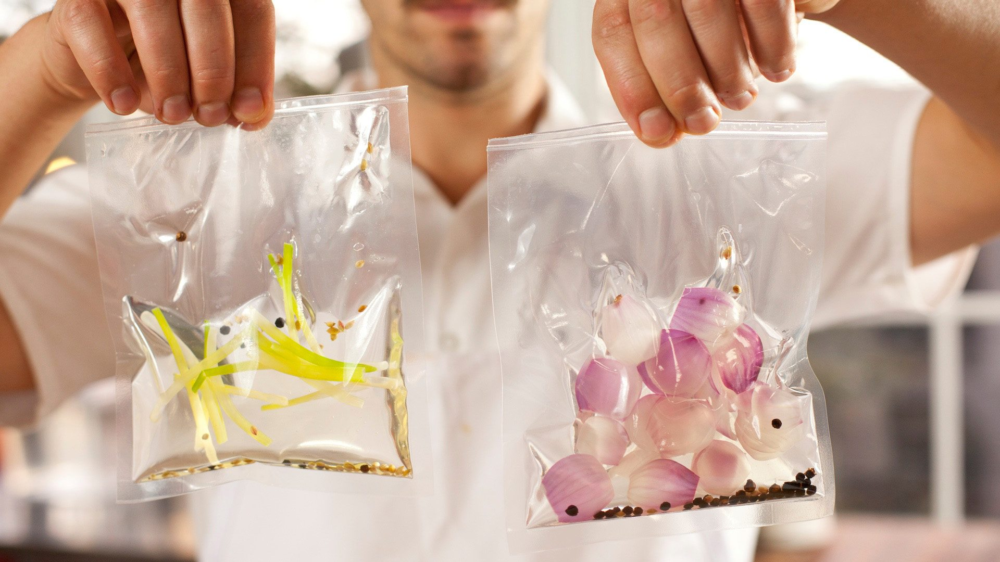
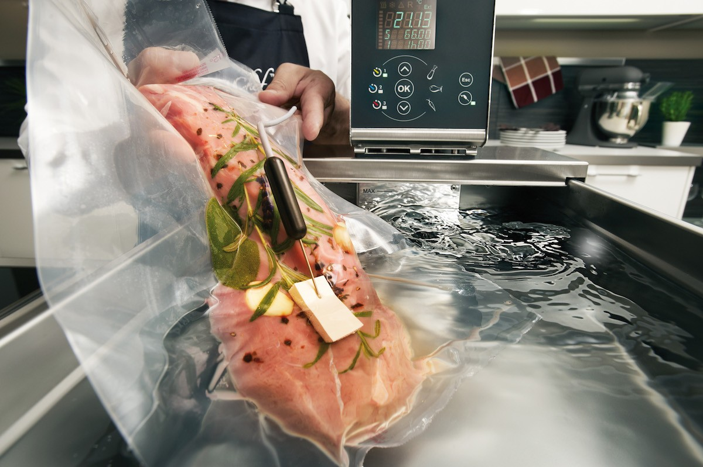

Вакуумизация
Вакуумная готовка по технологии SOUS VIDE в молекулярной кухне
Удивительный способ создания принципиально новых блюд придумал в 1974 году шеф-повар французского ресторана Жорж Пралю. Он вошел в историю, как первый мастер, молекулярной кулинарии, использовавший на кухне вакуумную технологию. Отныне приготовление sous vide практикуется во всем мире. Что это такое, расскажем подробнее.
Техника приготовления SOUS VIDE
Важными моментами в приготовлении блюд считаются вкус, польза и красота. Это отличает высокую кухню и по достоинству оценивается клиентами. Технология приготовления sous vide наилучшим образом позволяет достичь названных целей. Потому что представляет собой технологию низкотемпературного приготовления пищи в условиях вакуума. Достоинства этой техники:
Вакуумная готовка по технологии sous vide в молекулярной кухне
Техника приготовления sous vide: Для чего «изобретать велосипед»?
Казалось бы, зачем придумывать какие-то сложные молекулярные опыты с продуктами, когда есть давно проверенные методы приготовления блюд. Ответ на этот вопрос кроется в опытах еще одного шеф-повара, которого считают еще одним первооткрывателем необычной технологии. Работая в недорогом кафе фаст-фуда, повар задался целью приготовить жесткое мясо так, чтобы в итоге оно получилось сочным и мягким. Посоветовавшись с другом-биохимиком, он пришел к гениальному открытию: готовить мясо в вакууме! То есть, запечатав продукт в вакуум, он долго тушил его в воде с определенной не высокой температурой. И достиг желаемого результата.
Техника приготовления sous vide завоевает сердца
Популярность технологии молекулярной кухни объясняется тем, что блюда получаются не просто вкусными, красивыми и необычными. Их польза несомненно выше блюд, приготовленных традиционными методами. А еще, технология, доступная вначале только руки истинного мастера поварского дела, шагнула на кухни обычных домохозяек. Потому что ничего сложного на самом деле нет. Даже дети могут освоить приготовление соблазнительных десертов и аппетитных бутербродов, спагетти, одновременно осваивая кулинарное дело и биохимию. Мастер-классы по молекулярной кухне стали одними из популярных во всем мире. Издаются книги с рецептами, и даже специальные наборы для детей и для начинающих.
Обучение технологии sous vide
Обучение приготовлению в вакууме sous vide обычно происходит на семинарах, мастер-классах. Но можно освоить технологию и самостоятельно. И начать с чего-то самого простого. Это может быть апельсиновое спагетти, которое понравится и детям, и взрослым. Или что-то более интересное. Кстати, покупка домашнего вакууматора более выгодна по цене, чем приобретение блендера. А для приготовления соуса, сиропа, бульона сгодится обычный пищевой пакет. Еще одна необходимая вещь на кухне – это термометр. Потому что температуру воды придется контролировать постоянно.
Приготовление Sous vide может быть быстрым
Молекулярная кухня не терпит спешки. Но даже если вы готовите красное мясо, понадобится всего 20-30 минут. А для приготовления рыбы – не более 15 минут. В специальной литературе и на сайтах можно найти много интересных рецептов со всеми подробностями. Конечно, время приготовления мяса зависит от толщины куска. Но после тушения в вакууме, мясо рекомендуется прожарить быстро в раскаленном растительном масле – как правило, не более 30 секунд. Это для придания аппетитной корочки. Но необходимо понимать, что основные рецепты предусматривают приготовление техникой sous vide в течение 10 - 12 часов.
Учитывая простоту технологии и небольшой промежуток времени на приготовление, техника приготовления блюд sous vide может стать одной из основных на кухне каждой семьи. Полезно, вкусно, аппетитно, чего еще желать.